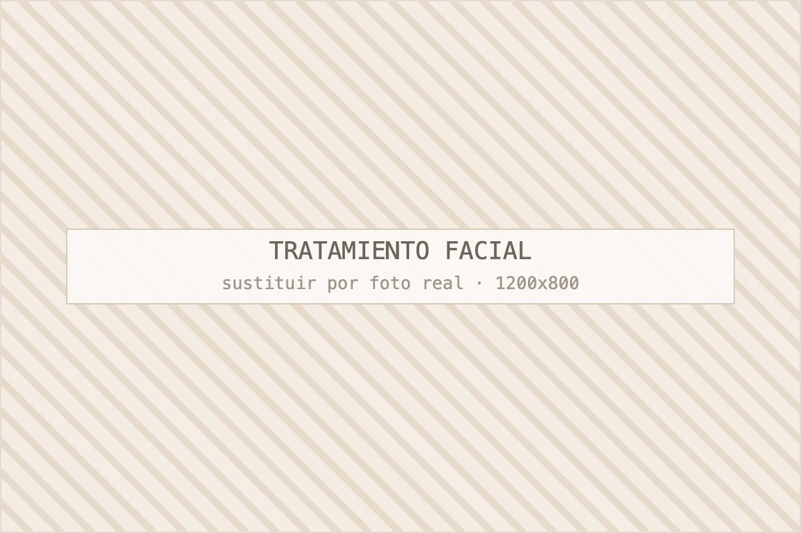

Micropigmentación de cejas
El complemento habitual del cuidado facial: enmarcar la mirada.
Ver micropigmentaciónFacial
Limpieza profunda con extracción, hidratación con ácido hialurónico, luminosidad con vitamina C y protocolos de firmeza. Antes de tocar la piel, la miramos.

Porque el mismo tratamiento facial puede ser excelente para una piel y contraproducente para otra. Antes de elegir protocolo miramos tipo de piel, nivel de deshidratación, estado del poro, marcas, sensibilidad y qué usas en casa.
El diagnóstico dura unos quince minutos, se hace con luz y lupa y es gratuito. De ahí sale una cosa concreta: qué protocolo, cuántas sesiones y qué tienes que cambiar en tu rutina. Es habitual que la primera recomendación no sea un tratamiento, sino simplificar lo que ya te estás poniendo: hay pieles irritadas por exceso de producto, no por falta.
Cuatro, y cubren prácticamente todo lo que entra por la puerta: limpieza profunda, hidratación, luminosidad y firmeza.
Doble limpieza, exfoliación, vapor, extracción manual de comedones, mascarilla calmante y protección. Es la base para pieles mixtas, grasas o con poro dilatado. Sesión de 60 minutos.
Ácido hialurónico de distintos pesos moleculares, con o sin electroporación. Para pieles tirantes, apagadas o castigadas por aire acondicionado y sol. Se nota en la misma sesión y se sostiene con tandas de cuatro.
Vitamina C, activos despigmentantes y peelings suaves progresivos. Requiere constancia y protección solar diaria; sin eso no lo hacemos, porque el resultado se va en dos semanas.
Radiofrecuencia facial, activos tensores y masaje de drenaje facial. Para pérdida de firmeza en óvalo y cuello. Tandas de 6 a 8 sesiones con mantenimiento trimestral.
Resumen rápido: si tienes poros obstruidos, granitos o textura irregular, empieza por la limpieza; si la piel está tirante, apagada y sin brillo, empieza por hidratación. Hidratar una piel congestionada da poco resultado, y limpiar una piel seca y sensible la irrita.
| Criterio | Limpieza profunda | Hidratación intensiva |
|---|---|---|
| Piel ideal | Mixta, grasa, poro dilatado | Seca, deshidratada, apagada |
| Qué resuelve | Comedones, textura, brillo excesivo | Tirantez, falta de luminosidad, líneas finas |
| Molestia | Extracción algo molesta | Ninguna |
| Precio orientativo | Desde 45 € | Desde 55 € |
| Frecuencia | Cada 6–8 semanas | Tandas de 4 sesiones |
Cuando hay las dos cosas —y pasa mucho— hacemos primero una limpieza y a las dos semanas empezamos la tanda de hidratación. En ese orden el resultado dura bastante más.
Una limpieza profunda cada seis u ocho semanas y, si buscas un objetivo concreto, tandas de cuatro a seis sesiones seguidas con una o dos semanas de separación.
Lo que más nos preguntan es si hacerse un facial cada semana acelera el resultado. No: la piel necesita tiempo de recuperación y sobretratarla la sensibiliza. Un calendario razonable, mantenido durante un año, da mucho mejor resultado que cinco sesiones en un mes antes de una boda.
Cuatro cosas: limpiar por la noche, hidratar mañana y noche, protector solar cada día del año y no cambiar de rutina cada mes.
Te damos la pauta por escrito con productos que puedes comprar en farmacia si no quieres cosmética de cabina; no obligamos a comprar nada aquí. Por experiencia, la clienta que sostiene una rutina de tres pasos gana a la que tiene ocho productos y los usa a medias.
En nuestro centro, entre 45 € y 90 € por sesión según el protocolo y los activos que lleve. Las tandas de cuatro sesiones tienen precio de bono y el diagnóstico inicial es gratuito.
Una limpieza profunda parte de 45 €, la hidratación con electroporación ronda los 60 € y los protocolos de firmeza con radiofrecuencia se mueven entre 70 € y 90 €. Está todo detallado en nuestras tarifas orientativas. Si además haces tratamiento corporal, ajustamos el precio del facial de mantenimiento.
La cabina hace el 40 % del trabajo y tu casa el 60 %. Si no vas a usar protector solar a diario, ningún protocolo de luminosidad se sostiene: preferimos decírtelo antes de que contrates cuatro sesiones.
Preguntas frecuentes
Lo que nos preguntan en consulta sobre este tratamiento. Si te queda alguna duda, escríbenos por WhatsApp al 692 601 791.
Depende del diagnóstico, y por eso es gratuito: pieles mixtas y con brotes empiezan por limpieza profunda con extracción, pieles secas o apagadas por hidratación con ácido hialurónico, y pieles maduras por protocolos de firmeza. En quince minutos con lupa y luz se ve con claridad lo que necesita tu piel. Salimos de la consulta con un plan escrito, no con una lista de tratamientos posibles.
Molesta unos minutos, sobre todo en la zona de la nariz y el mentón. Preparamos la piel con vapor y exfoliación previa para que el comedón salga con la mínima presión posible y calmamos al final con mascarilla y frío. Si tu umbral es bajo, dividimos la extracción en dos sesiones en lugar de forzar una sola.
Mejor esperar 12 horas tras una limpieza profunda o un peeling, y en el resto de protocolos puedes maquillarte al salir sin problema. La piel queda más receptiva y también algo más vulnerable, así que ese día conviene protector solar y poco producto. Si tienes un evento, agenda el facial dos o tres días antes, no el mismo día.
Las aclaran de forma progresiva; hacerlas desaparecer del todo depende del tipo de mancha y no siempre es posible en cabina. Los peelings suaves y los despigmentantes funcionan si van acompañados de protección solar diaria; sin ella, la mancha vuelve. Cuando sospechamos que la lesión no es un melasma o una mancha solar común, te derivamos a dermatología antes de tratar.
Sí, con protocolos calmantes sin vapor, sin extracción agresiva y sin activos irritantes. En rosácea diagnosticada trabajamos en coordinación con lo que te haya indicado tu dermatólogo y el objetivo es reforzar la barrera, no exfoliar. Es uno de los casos en los que menos es más y donde hay que tener paciencia con los tiempos.
Continúa por aquí
Casi ningún objetivo se resuelve con una sola técnica. Estas son las combinaciones que más sentido tienen junto a los tratamientos faciales.
El complemento habitual del cuidado facial: enmarcar la mirada.
Ver micropigmentaciónDescongestiona, relaja la musculatura y mejora el óvalo.
Ver masajesPrecios orientativos por protocolo y tandas con descuento.
Consultar tarifasPedir cita
Cuéntanos qué te preocupa y te decimos con franqueza qué tratamiento tiene sentido en tu caso, cuántas sesiones necesitarías y cuánto costaría. Si creemos que no vas a notar resultados, te lo diremos.
Última actualización: · Contenido revisado por Jeisy, responsable de Centro Estética Barcelona.